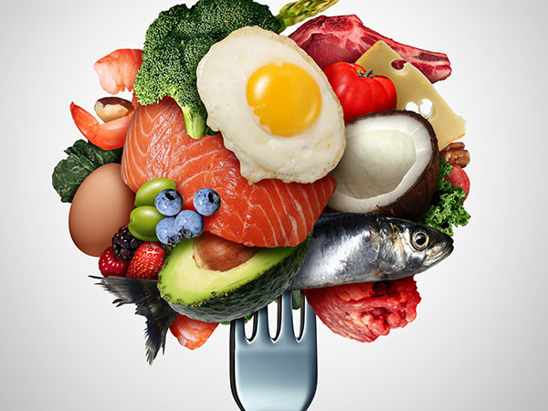

Navigating a chronic illness during the holidaysThe holiday season is a stress test we create for ourselves, but for people living with a chronic illness, the need to heed signs of fatigue can conflict with the desire to ensure others enjoy themselves. What does an illness have to teach us about self-care? The lessons are relevant to everyone, whether living with an illness or not. |
|---|
 |
Low-carbohydrate and high-saturated fat diet: Heart healthy, or more to learn?Low-carbohydrate diets have been popular for many years, but due to the high amounts of saturated fat, doctors and nutritionists worry about possible increased risk of cardiovascular disease. A study comparing three diets found that eating a high-fat diet did not necessarily raise heart risk, but the types and quantities of food make a difference. |
|---|
Yoga for weight loss: Benefits beyond burning caloriesObesity is a complex disease, and many factors contribute to weight gain and hinder efforts to lose weight. There is no single solution to weight loss, but there is good research that yoga may help manage stress, improve mood, curb emotional eating, and create a community of support, all of which can help with weight loss and maintenance. |
|---|
How to stay strong and coordinated as you ageMany physical abilities decline with age, along with changes that occur in coordinating the movements of the body. One of the most significant causes of this decline is reduced physical activity. In fact, as people age it becomes even more important to exercise regularly, and regular activity can help improve strength and coordination. |
|---|